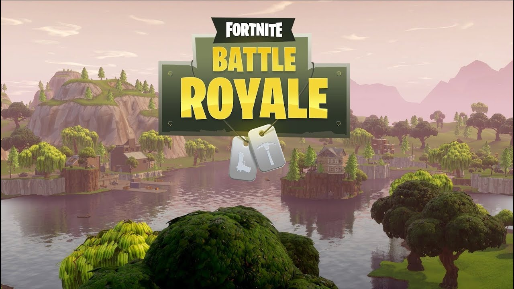
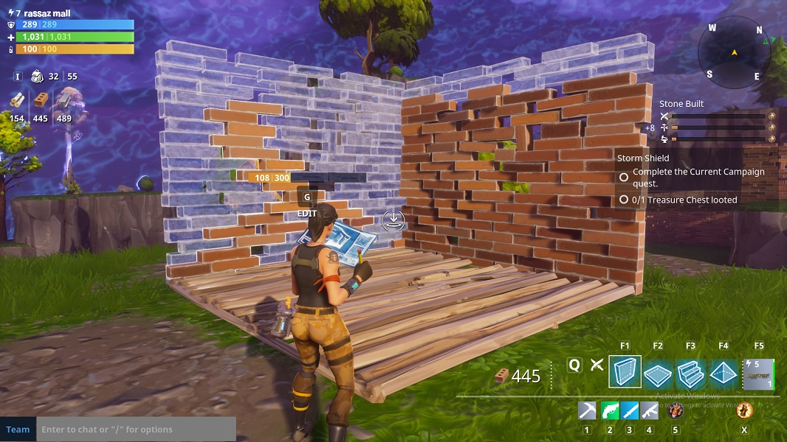
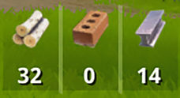

Glossary
- Assault Rifle: A rapid-fire, automatic rifle designed for infantry use and fires at consistent rate. It is a simplistic gun that was brought into Fortnite Battle Royale.
- Sniper: An extremely precise weapon that is designed for long range combat. Also used to scout out enemy fighters in a battle. It is a tactical weapon brought into Fortnite Battle Royale.
- Shotgun: A powerful firearm used for firing small shots at short range. It fires a burst of bullets towards an enemy. This close range weapon was brought into Fortnite Battle Royale.
- Building: Building is one of the main game-play elements of Fortnite. It consists of building, upgrading, and repairing basic structures such as walls, floors, stairs, and roofs, as well as placement of traps, to create a functional defensive Fort.

- Materials: Materials are the sole requirement in building in Fortnite. The materials you need include wood, metal and brick. To get materials players must break down objects to gain its materials.

Disclaimer: These definitions are not a direct absolute definition of these words, but are relative based on Fornite Battle Royale.
Photo Credits
- First game-play picture: Fortnite Fort Building, https://cdn2.gamepur.com/images/fortnite/fortnite-build-wall.jpg Retrieved 2018-03-06
- Second game-play picture: Fortnite Materials, http://oyster.ignimgs.com/mediawiki/apis.ign.com/fortnite/thumb/2/23/FortniteBattleRoyale.jpg/228px-FortniteBattleRoyale.jpg Retrieved 2018-03-06